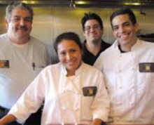

About us
Sazón (Spanish for "seasoning") is owned and operated by Juan Luis Navarro and his son, Juan Jose, who runs the house, designs the menus items, and cooks.
Three other brothers, Juan Manuel, Juan Pablo, and Juan Francisco, also carry on their father's name, while daughters Erika Luz Maria, Luisa Fernanda and Anna Luisa add a little female balance.
We are the only authentic Peruvian place north of the Golden Gate Bridge. When Sazón opened, to our surprise, we discovered that there is a large Peruvian community in the northern Bay Area. It’s a highly diverse community, comprised of individuals that have lived throughout the various provinces in Peru – making our job a little more challenging to meet the expectations of such well-versed palates.
Our family is originally from Lima, where authentic Peruvian recipes were passed down by our great-grandmother, Maria Olinda, who herself came from Peruvian, African, Spanish and Italian ancestry. Peruvian cuisine fuses different periods from the South American country's history, from the ancient Incan empire through to the Spanish conquest, which brought in slaves from Africa and China. Further influences come through Italian and Japanese immigrants, blending indigenous foods of Peru and cooking methods of four continents into a unique taste.
As you can discern, Peruvian cuisine is deeply rooted in its culture and steeped in tradition and family ties. Thank you for taking the time to read a little bit of our family history and Sazón. We look forward to making your acquaintance and sharing our culture with you.
See you soon!
Juan Jose y Juan Luis Navarro

{kind=link}
{kind=link}
{kind=link}
{kind=link}
{kind=link}
{kind=link}